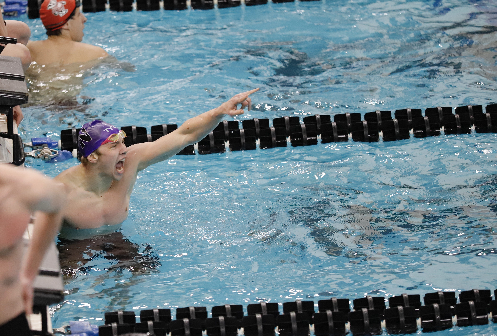
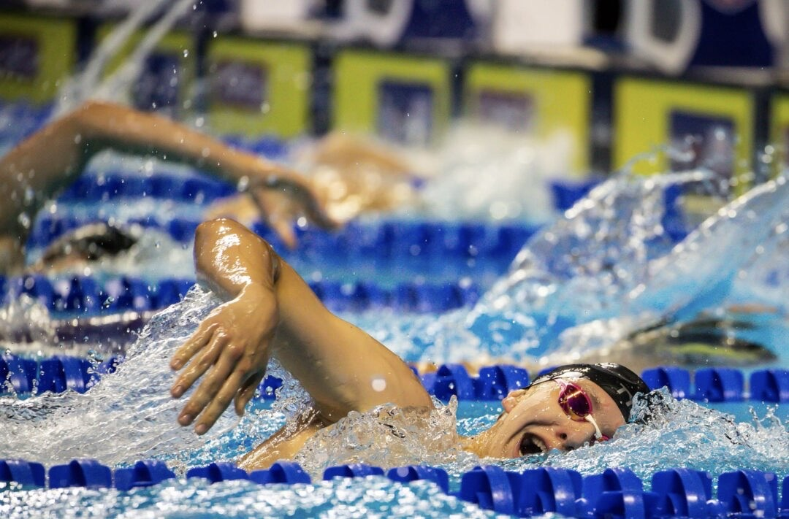
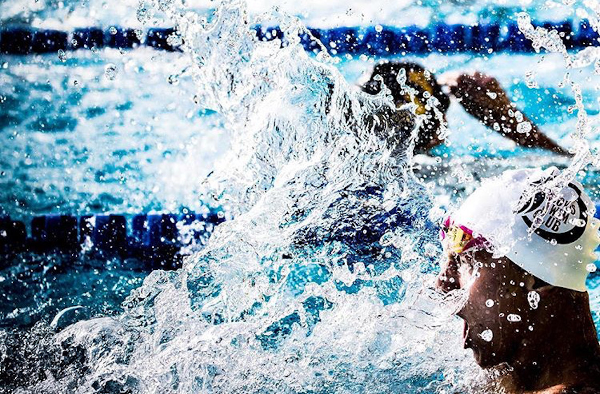
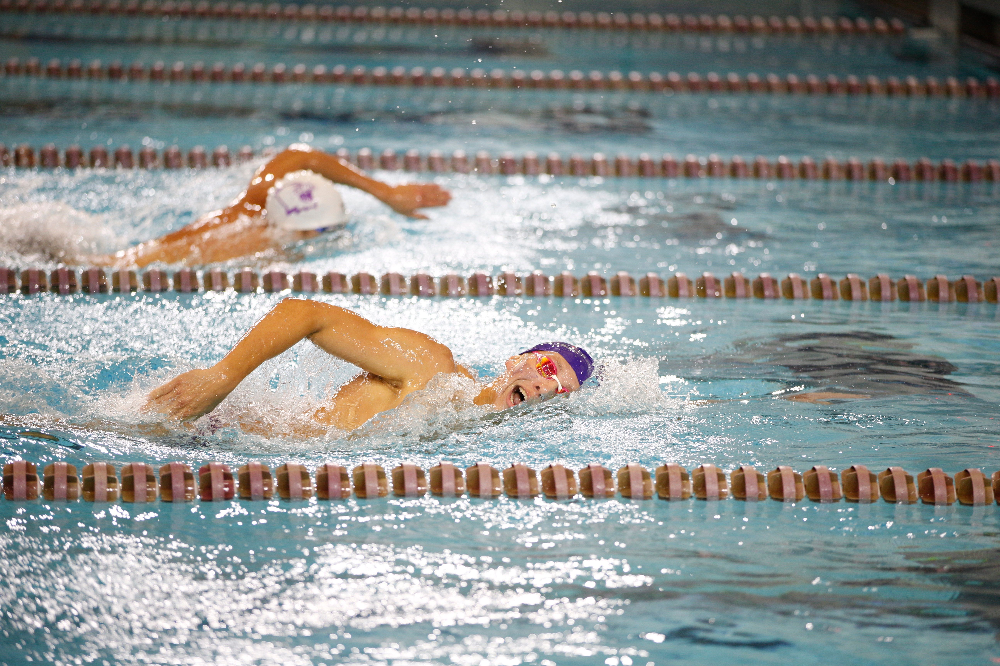
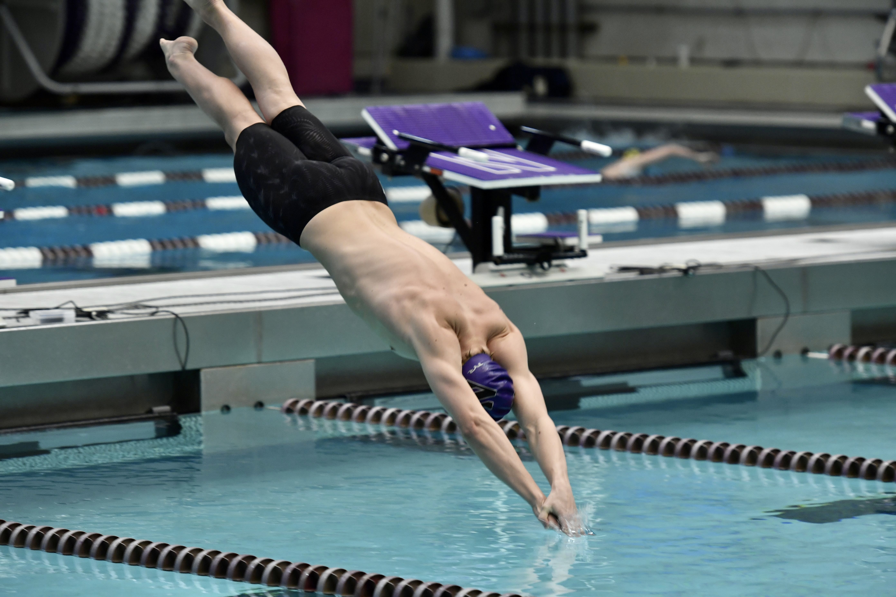
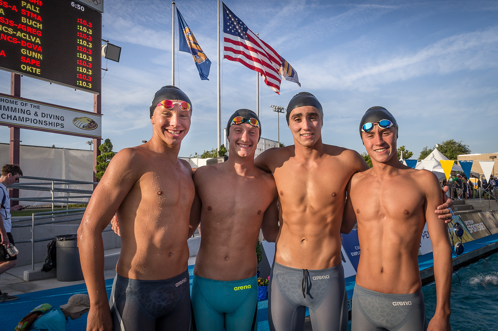
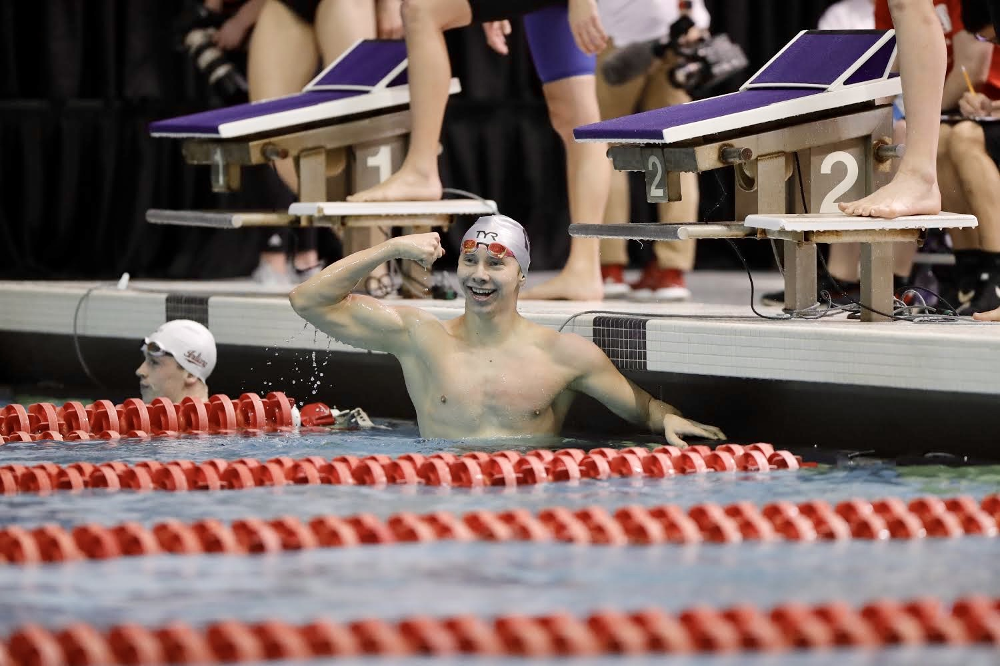
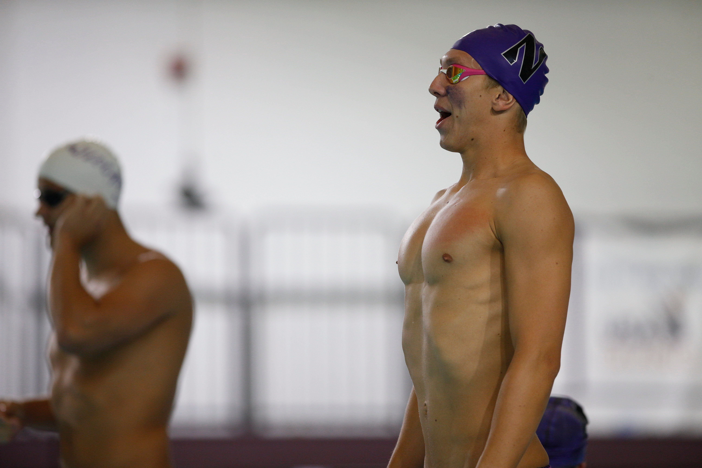
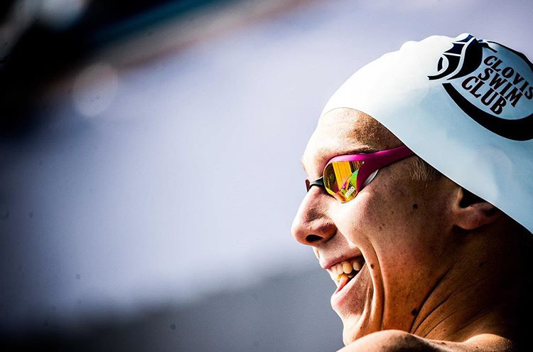

Swimming

My story
My career began at age 7, when my parents put me in swim lessons so I would grow up water-safe. Little did they know the sport would become one of my greatest passions. Watching Michael Phelps at the 2008 Olympics inspired me to move from lessons to club swimming. I dove in with the confidence of an Olympic medalist and was quickly humbled: I could barely finish two laps!
As I grew up in the sport, I met my best friends through swimming and loved going to practice, competing at meets, and volunteering on the pool deck. In high school I realized swimming could give me the chance to swim and study at some of the best universities in the world. That added pressure to perform, but I never lost my childish love for the water.
At Northwestern I achieved goals I never thought possible: training with some of the best in the world, competing in the Big Ten, and studying at a top-ten university. In 2021 I competed at the U.S. Olympic Trials, fulfilling my childhood dream of vying for a spot to represent the U.S. at the Olympics.
Accolades
- U.S. Olympic Trials qualifier (2021)
- 3× Academic All-Big Ten
- Northwestern school record holder
- Big Ten Sportsmanship Award
- Executive, Northwestern Student-Athlete Advisory Committee
- Big Ten Postgraduate Scholarship (2024)


What I bring from swimming
I am forever grateful to the sport for shaping who I am. Swimming instills a gritty work ethic. 5 AM practices and grueling workouts take a toll, but it all becomes worth it when you hit your goals.
I learned how to fail gracefully. In swimming, failure happens daily, and it hurts. In response, I attack the next rep and bounce back. Engineering is the same: designs are iterative, and most things don’t work the first time.
And I learned to manage my time. I finished a B.S./M.S. in mechanical engineering in four years while training and competing in the Big Ten.
Swimming also helped me grow in servant leadership. As an executive on the Student-Athlete Advisory Committee, I relayed my peers’ voices to leadership in the Northwestern athletic department. That meant being invested in my teammates’ lives, listening to them, and supporting them through action. These days I’m on the other side of it, coaching kids at Bruin Swim Club.
Gallery






